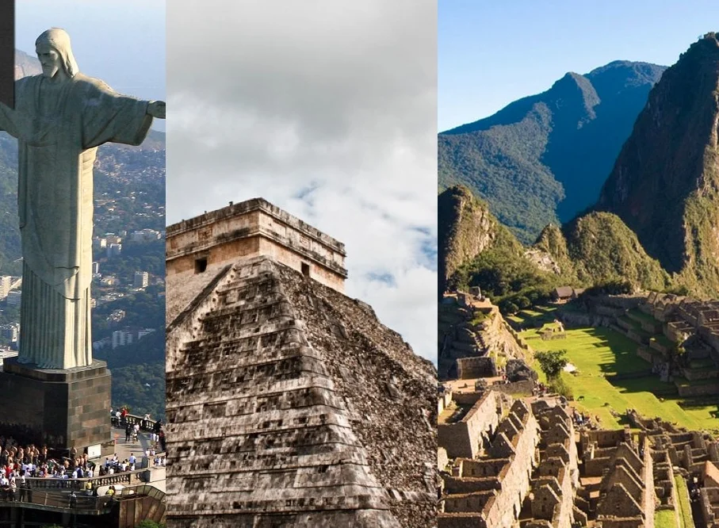

Empezamos por Chichén Itzá, México. Chichén Itzá es un complejo de ruinas construido por los mayas. Está ubicado en la península de Yucatán. Es una enorme e impresionante pirámide llamada El Castillo, dedicada al dios Kukulkán, representado por una serpiente emplumada. En la zona circundante también se puede encontrar otras estructuras de piedra, entre las que sobresalen el Campo de la Pelota, el Templo de los Guerreros y el Muro de las Calaveras. A nosotras lo que más nos encantó fueron los tallados gráficos que hay en estas estructuras, son increíbles y fascinantes.
Luego, nos dirigimos a Perú para ver las asombrosas ruinas de Machu Picchu. Su nombre significa “montaña vieja” en quechua, idioma oficial del Imperio inca. El viaje de Cusco a Aguas Calientes en tren fue una de las mejores experiencias de este viaje. Cuando llegamos nos quedamos sin palabras para describir la maravilla que teníamos frente a nuestros ojos. Realmente, Machu Picchu es una extraordinaria muestra de arquitectura paisajística del mundo. El lugar está conformado por la zona agrícola (donde los andenes sirven como áreas de cultivo) y la zona urbana (conformada por templos y plazas correctamente construidos). Entre las construcciones más comunes están las escalinatas y los canales de piedra, que servían para transportar agua. El guía nos dijo que en el año 2007, Machu Picchu se convirtió en una de las nuevas siete maravillas del mundo. Disfrutamos mucho las experiencias que vivimos en Cusco y Machu Picchu. Nos encontramos con gente muy orgullosa de su cultura y de sus raíces. Estando en Perú, nos dimos cuenta de que necesitábamos visa para entrar a Brasil. Tuvimos que volver a Lima, la capital de Perú, para solicitar la visa. Aprovechamos para conocer la ciudad y surfear en el Pacífico. Una vez que obtuvimos las visas nos dirigimos a Brasil.
Primero llegamos a Río de Janeiro, ¡qué ciudad tan alegre y bonita! Su gente es tan amable y positiva. Tomamos un tour y nos fuimos a visitar el Cristo Redentor del Corcovado. Esta maravilla está ubicada en el cerro del Corcovado a 713 metros de altura. Esta gran escultura representa a Cristo viendo la ciudad de Río de Janeiro. El guía nos contó que la escultura se terminó de construir en 1931, y se hizo para conmemorar los 100 años de independencia de Brasil. La escultura mide 30 metros, está hecha de granito y pesa 1145 toneladas, ¿pueden creerlo? Luego de Río, nos fuimos a Bahía y a Iguazú. Nuestro paseo por Brasil fue espectacular. Aprovechamos para conocer sus playas, su rica gastronomía y sus bailes vibrantes, llenos de alegría.